I Backtested Dual Momentum for 29 Years. It Stopped Working the Year the Book Came Out.
Full rules, 90+ metrics, walk-forward validation, and all the code. The risk numbers held up. The returns did not.
Dual Momentum is one of the most widely recommended systematic strategies in retail investing. The rule takes two sentences to state, it sidestepped both the dot-com bust and the 2008 crash in backtests, and Gary Antonacci's 2014 book made it something close to canon in the DIY quant community.
So I rebuilt it from scratch and ran it over 29 years of daily data — May 1997 to October 2026 — with realistic costs, next-day execution and no fitted parameters. Then I split the record at 2014, the year the book was published.
Before publication, the strategy beat the S&P 500 by 5.1 percentage points a year. After publication, it trailed by 5.4.
That is the headline, and it is not quite the indictment it sounds like. The reason the edge vanished turns out to be more interesting than the fact that it did, and the part of the strategy that actually matters survived the test. But it does mean almost every write-up you have read about Dual Momentum is quoting numbers from a window that has not repeated.
Here is the whole thing: the rules, every metric I could compute, and the four robustness tests that decide whether any of it means anything. All the code and every result file is public, so you can disagree with me using my own data.
New to systematic trading? Terms like CAGR, Sharpe ratio, maximum drawdown and walk-forward analysis are explained in plain language in the glossary — 64 definitions, no prior knowledge assumed. Dotted underlines in this article link straight to the relevant entry.
The idea
Dual Momentum, in Antonacci's Global Equities Momentum (GEM) formulation, asks two questions once a month and then does nothing for the rest of it. First, absolute momentum: has the stock market beaten cash over the past 12 months? If not, hold bonds. Second, relative momentum: if stocks are winning, hold whichever of US or international equities has the stronger 12-month return.
That is the entire strategy. One lookback, one rebalance a month, one position at a time.
The inefficiency it leans on is the best-documented one in empirical finance. Assets that have outperformed over the past 6–12 months tend to keep outperforming for the next 1–12 months (Jegadeesh & Titman, 1993; Moskowitz, Ooi & Pedersen, 2012). The usual explanations are behavioural — investors under-react to news, then herd into it — plus the structural fact that bear markets tend to unfold over months rather than days, which gives a slow 12-month filter time to step aside.
GEM combines two separate effects. Relative momentum harvests the cross-sectional premium; absolute momentum is a trend filter. Keep that distinction in mind, because the robustness section shows that one of the two does essentially all the work.
The rules, exactly as backtested
On the last trading day of every month, using month-end closes:
- Compute the trailing 12-month total return of US equities, international equities and T-bills.
- Absolute momentum test: if US equities' 12-month return is below the T-bill return, hold 100% US aggregate bonds. Stop.
- Relative momentum test: otherwise hold 100% of whichever equity sleeve — US or international — has the higher 12-month return.
- Execute at the next trading day's close. Hold until the next month-end. No leverage, no shorting, no intra-month trades.
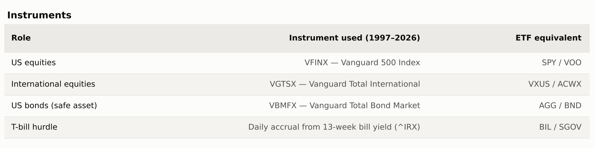
I used mutual-fund share classes because they carry the longest common history — VGTSX launched in April 1996. The ETF version (SPY/EFA/AGG) is run as a cross-check in the robustness section.
It is worth noting what the rules do not contain: no stop-losses, no volatility targeting, no partial positions. One asset, all in, once a month.
Backtest setup
Every number here comes from one run of a small pandas/numpy harness I wrote for this series. The same engine, cost model and metric definitions will be used for every strategy that follows, so results stay comparable across articles.
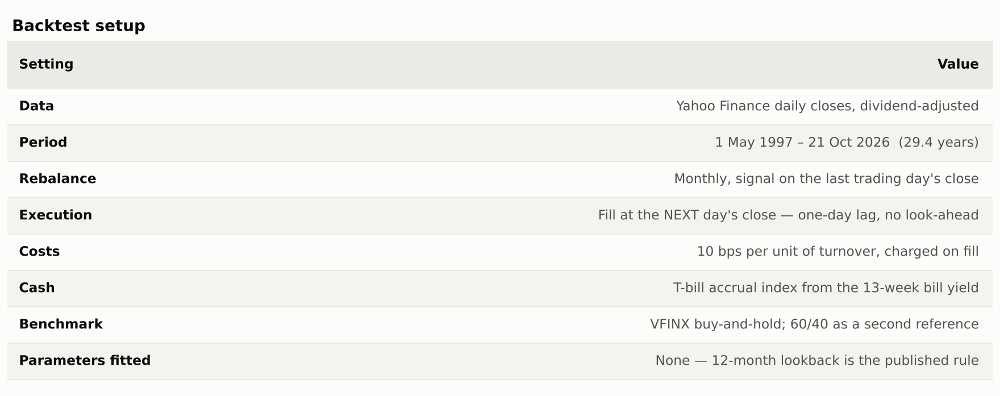
Bias controls. Signals use only month-end closes available on the rebalance date, and execution is lagged a day, so there is no same-bar look-ahead. No parameters were fitted — the 12-month lookback is the published rule, and the sensitivity grid below exists precisely to show what happens if you tune it. Fund expense ratios are already inside the adjusted prices.
What is not modelled: taxes (32 switches in 354 months, so roughly one month in eleven is a taxable event), bid-ask spread beyond the flat 10 bps, and the fact that mutual funds fill at the same close as the signal, which an ETF implementation would not.
Results
Over 29.4 years, Dual Momentum turned $1 into $17.65 against $15.89 for the S&P 500 — a 10.25% CAGR versus 9.85% — with a quarter less volatility and a maximum drawdown of 34% against 55%.
The return edge is small. The risk edge is the story.
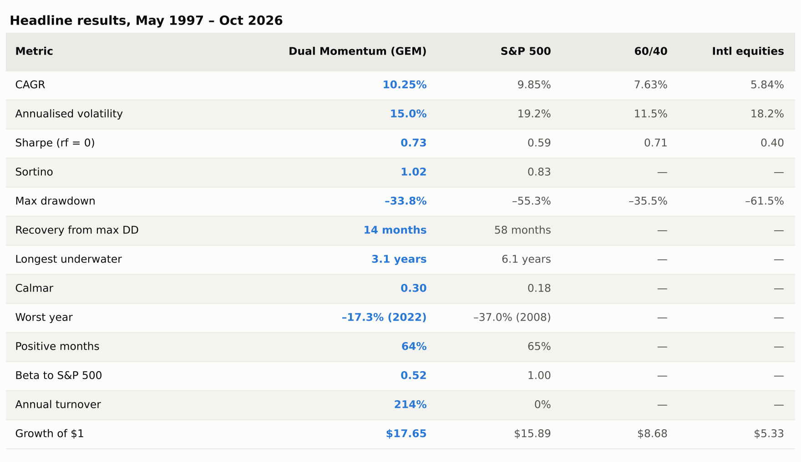
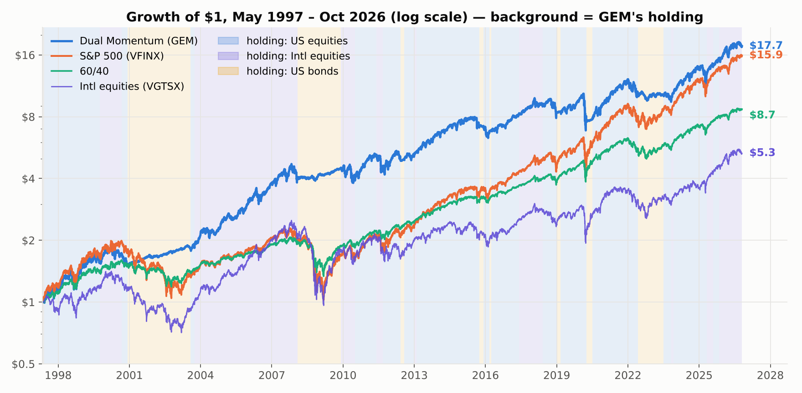
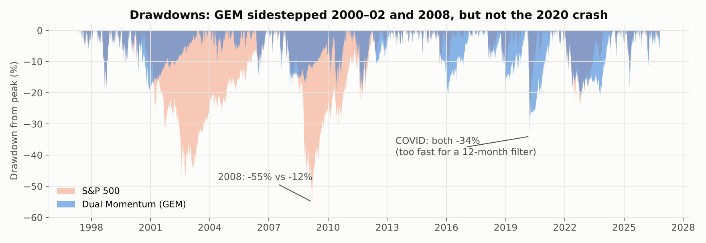
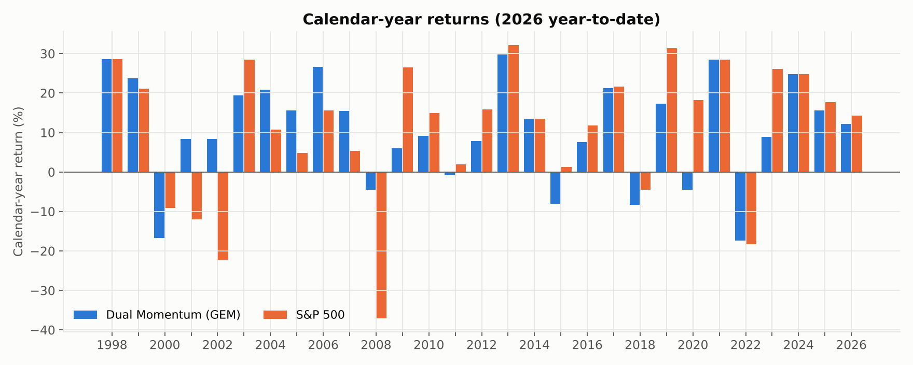
Year by year. The strategy beat the index in 9 of 29 full years, matched it in 5 — years it sat in US equities throughout — and trailed in 15. The wins are large and clustered in bear markets: +20, +31 and +33 points in 2001, 2002 and 2008. The losses are more numerous and smaller: 2009, 2019, 2020 and 2023 were each 14–23 points behind, all rebounds the filter was late to.
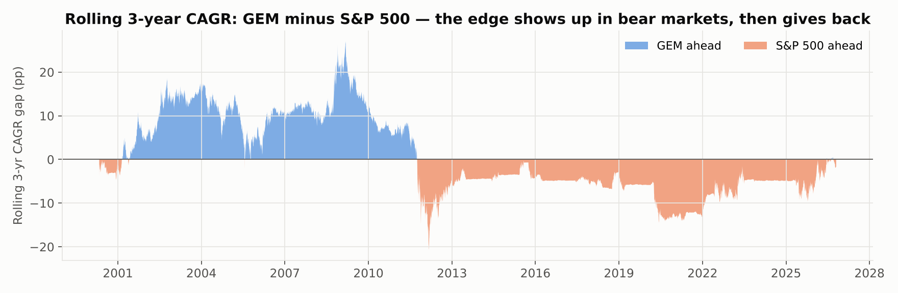
An investor who adopted this in 2013 has been behind the index on nearly every three-year window since.
When it works, when it bleeds
The strategy's value is concentrated in two kinds of episode, and its damage in two others. Here is every major market episode of the backtest, with what the strategy held during it.
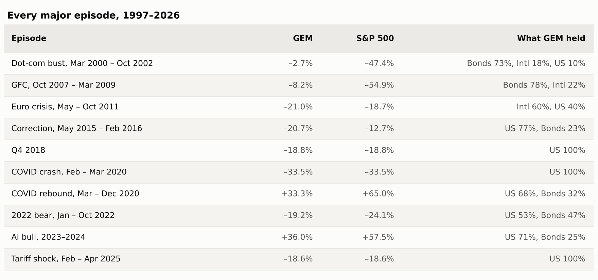
It works when a bear market unfolds over many months — 2000–02, 2008 — so the 12-month signal turns negative while most of the decline is still ahead. It also works when international equities lead for extended periods, as in 2003–07, when the relative test kept the portfolio in VGTSX and it beat the S&P by roughly 10 points a year for four years running.
It bleeds when the decline is fast (2020, 2025 — the signal was still positive at the bottom), when markets chop sideways across the month-end dates (2011, 2015), and in V-shaped recoveries, where it re-enters one to three months after the low and misses the sharpest part of the rebound.
Slow trends, good. Fast shocks, no protection. Sideways, mildly harmful. And in 2022 — a slow bear in which bonds also fell — it helped only modestly, because the "safe" asset was not safe that year.
Robustness: four tests
A single equity curve proves nothing. These four ask whether the result survives changing the one parameter, changing the era, changing the instruments, and re-optimising honestly.
1. Which half does the work?
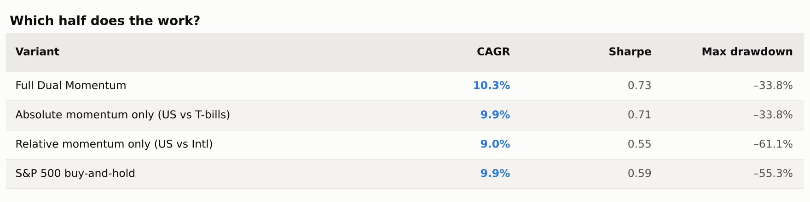
The trend filter is the product. Relative momentum on its own has worse drawdowns than the index — it rode international equities all the way down in 2008 — and adds only 0.4 points of CAGR when layered on top of the filter.
If you remember one thing from this article: the absolute-momentum test is where the risk reduction comes from. The clever half is the half you can drop.
2. Lookback sensitivity
Every lookback from 9 to 15 months lands within 0.3 points of CAGR and 0.02 of Sharpe. Short lookbacks (3, 6 months) trade three times as often and earn less. There is no cliff, and 12 months is not a lucky number.
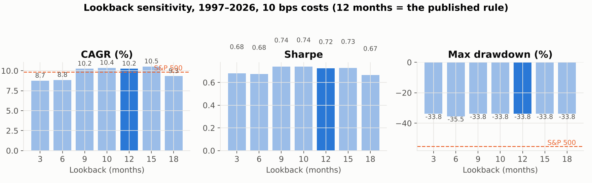
3. Before and after publication
Antonacci's book came out in 2014. Splitting there, with no re-fitting:
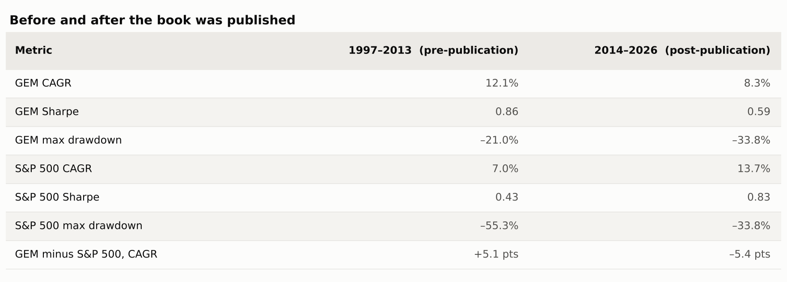
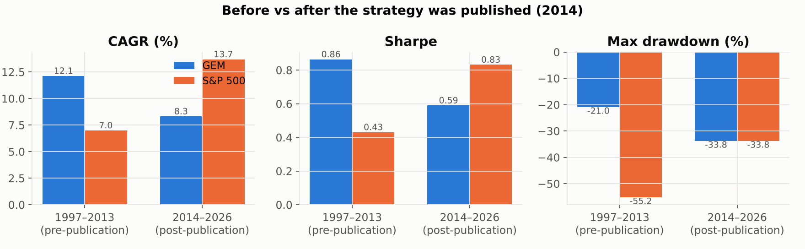
This is the strongest evidence in the article, and it cuts both ways. The strategy did not break — Sharpe stayed positive, drawdown stayed no worse than the index — but its entire return advantage came from the two slow bear markets that happened to fall in the first half. The second half had none, and it trailed badly.
Whether you call that "the edge was arbitraged away" or "the regime simply did not recur" matters enormously for what you do next, and the data here cannot settle it. Twelve years is not enough to distinguish a dead strategy from an unlucky one — which is itself the point.
4. Walk-forward
Re-choosing the lookback each year from the best of {3, 6, 9, 12, 15, 18} on the trailing five years, then trading it out-of-sample for the next year, 2003–2025:
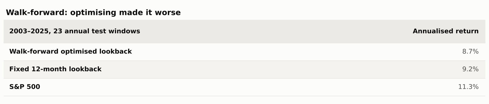
Optimising made it worse. The chosen lookback drifted from 9 to 6 to 3 to 18 months as each regime ended, and the optimiser arrived everywhere late. Fixed-and-simple beat tuned-and-clever, which is the right lesson for a strategy whose edge is behavioural rather than statistical.
5. Instruments and costs
The ETF version (SPY / EFA / AGG) from October 2004 returned 8.1% CAGR against 9.6% for the mutual-fund version over the same window, with identical drawdowns. The gap is EFA, which covers developed markets only, versus VGTSX, which includes emerging markets — and emerging markets led in 2005–07.
Costs from 0 to 50 bps a trade move CAGR from 10.5% to 9.3% and Sharpe from 0.74 to 0.67. At 32 trades in 29 years, this strategy is not cost-sensitive.
What's good and what isn't
In its favour
- It cuts the deep, slow bear markets. In 2000–02 and 2008 it spent roughly three-quarters of the time in bonds and lost 3% and 8% respectively, against –47% and –55% for the S&P 500.
- Equity-like returns with roughly a quarter less volatility, and half the maximum drawdown.
- Twelve decisions a year at most, 32 actual regime switches in 29 years. Costs barely register.
- Nothing to calibrate — the kind of rule a person can run from a spreadsheet for decades without drifting.
- Behaviourally survivable: never short, never leveraged, never more than a month from a decision.
Against it
- A 12-month filter cannot react to a crash inside a single month. In February–March 2020 it was 100% in US equities and took the full –34% — its worst drawdown of the entire backtest, worse than 2008.
- It gives back the edge in recoveries, re-entering late: 2009 (+6% vs +27%), the 2020 rebound, 2023 (+9% vs +26%).
- Whipsaw in choppy markets. In 2011 and 2015–16 it lost more than the index because the filter flipped at the wrong moments.
- Binary all-or-nothing allocation means a single month-end print decides 100% of exposure.
- A 14.6% tracking error and a –73% maximum relative drawdown. It can lag the index by enormous margins for years.
Failure modes, and what I'd change before trading it
Fast crashes. The worst drawdown of the whole run was 2020, not 2008. A 12-month signal is a slow-bear instrument; it offers no protection against a four-week collapse and will be fully invested at the bottom of one. The fix is not a shorter lookback — the sweep shows that brings back costs without solving the problem — but a second, faster overlay: a 1–3 month trend check, a volatility cap, or a drawdown stop, accepting more whipsaw in exchange.
Late re-entry. The same slowness costs 15–25 points in the first year of every recovery. Over a full cycle this roughly cancels the crash protection in return terms. What you keep is the lower volatility and the shallower drawdown. Treat it as a risk-management strategy that happens to keep up with equities, not as an alpha strategy.
The safe asset is not always safe. In 2022 the strategy sat in bonds for half the year and still lost 17%. Any version traded today should at least compare bonds against T-bills before holding them, or use short-duration bonds as the off-switch.
Smaller points: month-end execution concentrates every decision onto 12 prints a year, so staggering into tranches across the month reduces signal luck; switches are taxable events in a brokerage account; and the ETF version will not match the mutual-fund backtest.
What I would actually run: the absolute-momentum half on its own — US versus T-bills, bonds as the off-switch — with a volatility cap, in a tax-advantaged account, as the defensive sleeve of a larger portfolio rather than the whole portfolio. That is the version a later article in this series will test.
The code
Everything here runs from a ~400-line Python harness (pandas, numpy, yfinance) with a Strategy interface, a one-day-lagged execution engine, a flat cost model, and robustness helpers for parameter sweeps, in/out-of-sample splits and walk-forward. Each run writes a single JSON file — every metric, the yearly table, equity and drawdown series, allocation changes — and that file is what the charts and tables above were rendered from.
pip install -r requirements.txt
python run.py # regenerates every number above, ~2 minutes
python make_charts.py # regenerates every chart- AlgoStrategyLab/dual-momentum — this strategy, with every output file committed
- AlgoStrategyLab/strategylab-core — the shared engine, MIT licensed
Every strategy in this series emits the same JSON schema, so results are directly comparable across articles.
Next up: the simplest possible trend filter — a 10-month moving average on the S&P 500 — and whether it does anything Dual Momentum's absolute-momentum test does not.
Appendix: the full metric sheet
Everything the harness computes, grouped the way a fund fact sheet would group it, for the strategy and for the S&P 500 over the identical window.
Returns
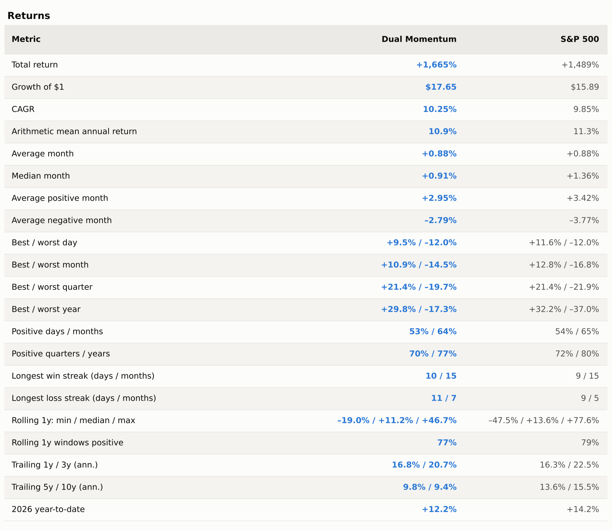
The arithmetic mean is lower than the index but the geometric mean (CAGR) is higher: that gap is the volatility drag the strategy avoids. Note also the 7-month losing streak and the –19% worst rolling year. This is not a smooth ride, it is a less bumpy one.
Risk
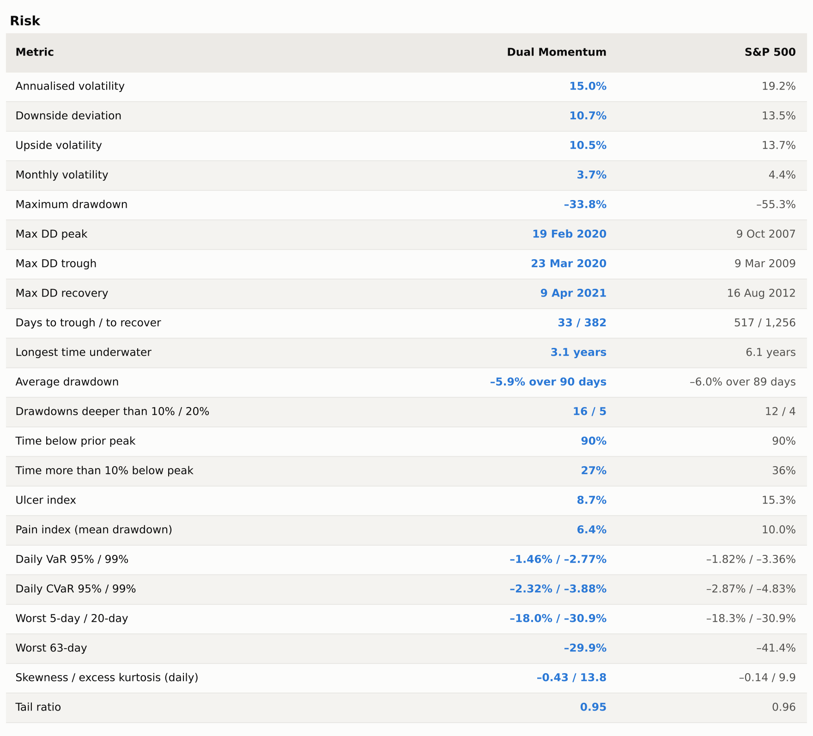
The ulcer and pain indices are the numbers to look at — both roughly halved, because they measure how deep and how long drawdowns run, not just the worst one. The flip side is in the tail rows: the strategy has more negative skew and fatter tails than the index, because when it is caught it is caught fully invested, and the worst 5- and 20-day returns are identical to the index's.
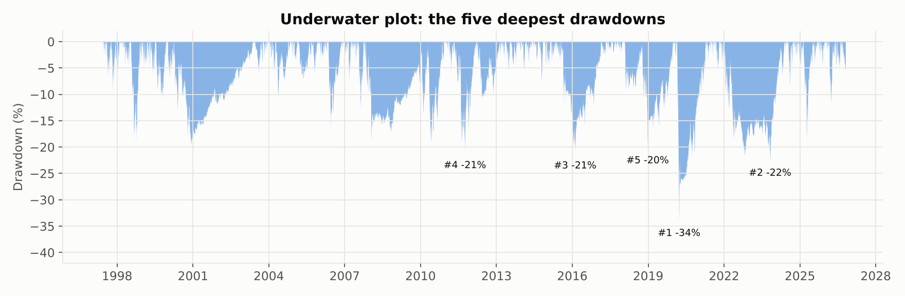
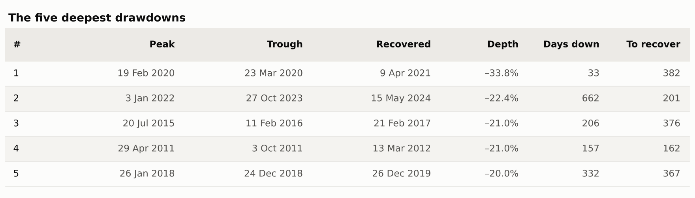
Neither 2000–02 nor 2008 makes the list. Every one of the five worst drawdowns came after 2010, four of them in choppy or fast-falling markets the filter cannot read.
Risk-adjusted
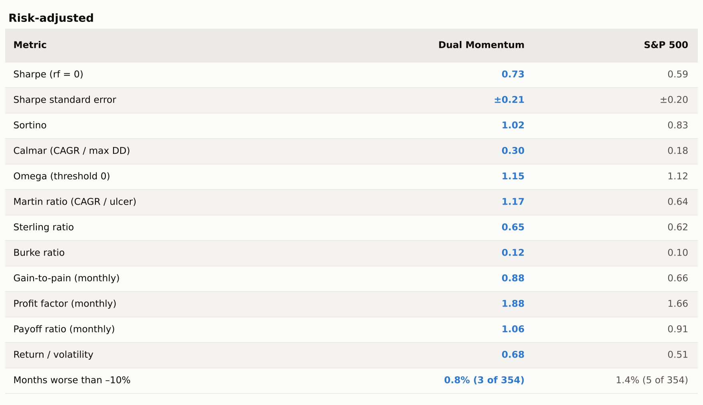
One row deserves a pause: the Sharpe standard error. With 29 years of data, a Sharpe of 0.73 carries a 95% interval of roughly 0.3 to 1.1 — and the index's 0.59 sits well inside it. The improvement in Sharpe is real but not statistically decisive. The improvement in drawdown-based ratios (Calmar 0.30 vs 0.18, Martin 1.17 vs 0.64) is much larger, and that is the defensible claim.
Relative to the S&P 500
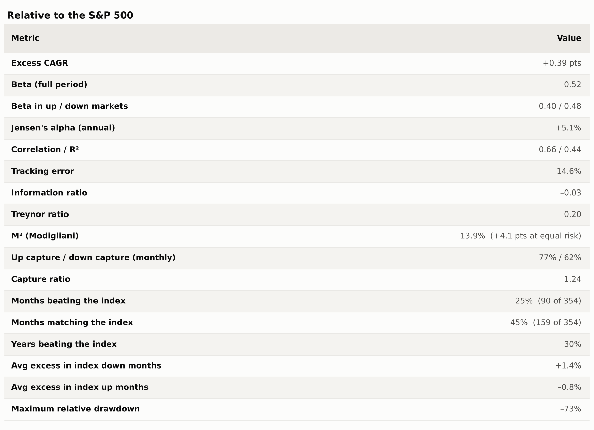
These rows explain both halves of the story. Beta of 0.52 and down-capture of 62% say the strategy behaves like a half-equity portfolio in bad months; up-capture of 77% says it still gets most of the good ones. That asymmetry is the whole thesis.
But a 14.6% tracking error and a –73% relative drawdown mean it can and does lag the index by enormous margins for years at a time. That is the behavioural cost, and it is the reason most people abandon a strategy like this shortly before the next crash would have paid them back.
Trading
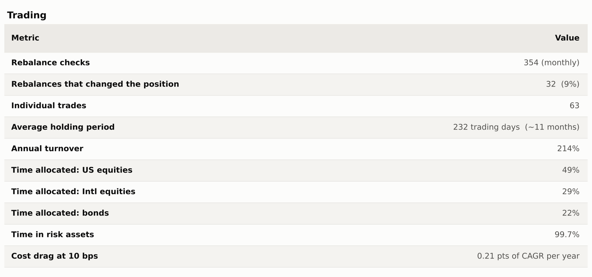
Monthly returns
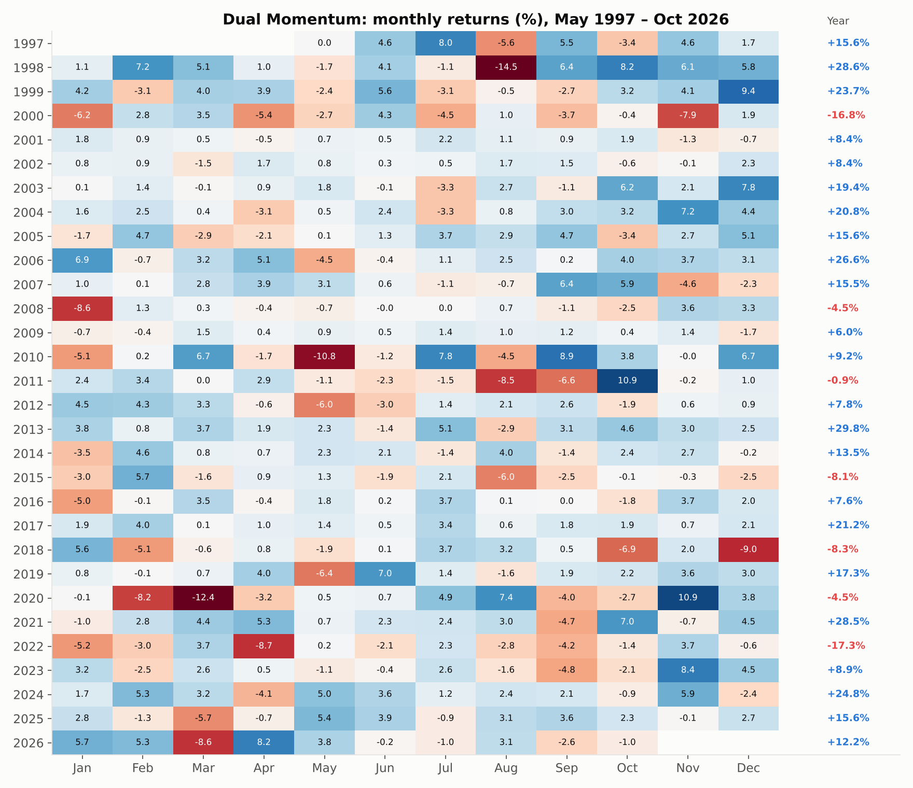
References. Antonacci, G. (2014), Dual Momentum Investing. Jegadeesh & Titman (1993), "Returns to Buying Winners and Selling Losers", Journal of Finance. Moskowitz, Ooi & Pedersen (2012), "Time Series Momentum", Journal of Financial Economics. Data: Yahoo Finance adjusted closes, retrieved 22 October 2026.
This is research and education, not investment advice. Backtests benefit from hindsight in instrument choice and start date, and past performance does not predict future results.